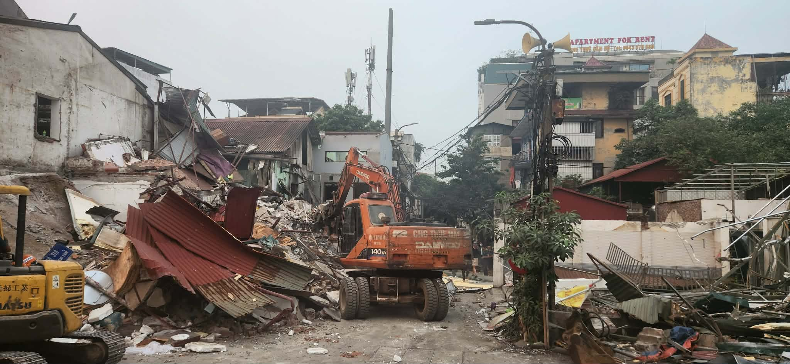
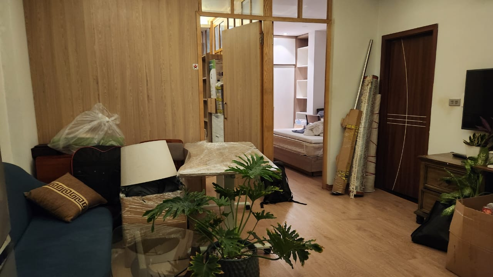
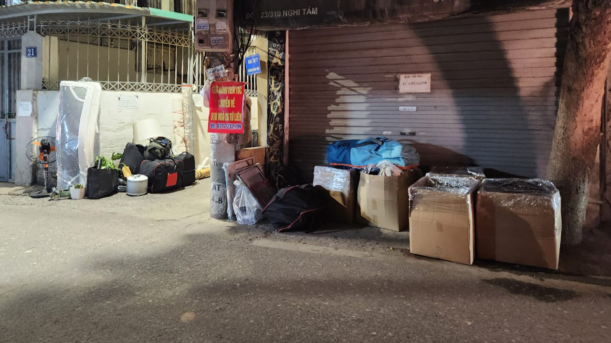
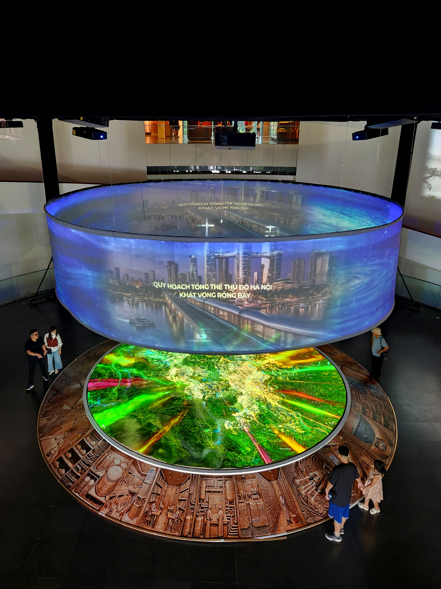
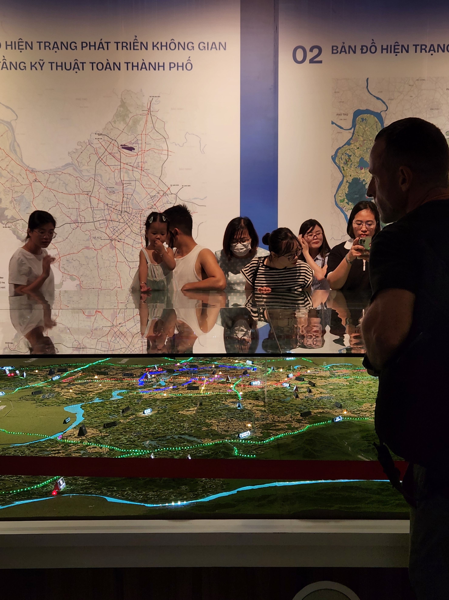

Abstract
This Field Note follows a single displacement, the author's own sudden eviction from a Hanoi street in 2026, and the way a later encounter, a public exhibition of Hanoi's 100-year development masterplan, changed how that displacement came to be understood. Drawing on dated correspondence, direct observation, and conversations with residents holding divergent views, it asks what happens to the spatial conditions that produce everyday public life when a city is reorganised at the scale of decades and hectares. Engaging briefly with scholarship on everyday urbanism and lived space, the piece resists resolving this tension, leaving the reader with one question: when a city reorganises the physical conditions of everyday life, what happens to the forms of public life those conditions made possible?
Keywords
A Street Disappears
At ten to two in the afternoon on the 9th of April, I was at my desk with three colleagues when I opened a message from my landlady:
Dear Alex, I would like to inform you that the property you are currently renting has been subject to an urgent land clearance and acquisition decision by the authorities, months earlier than the originally expected schedule. Now, it would be starting from 15th - 20th April. As a result, we regret to notify you that the lease will need to be terminated ahead of time. We sincerely apologize for this unexpected situation and any inconvenience it may cause. We kindly ask for your understanding and cooperation in arranging to vacate the property at your earliest convenience. We are willing to support you during this transition period as much as possible. Thank you for your understanding.
I wrote back: what do you mean that I need to move out in a week? She replied that her own father had only been told that afternoon, and had passed it on to her right away. The schedule, she said, had been meant to be months off still; it had changed without her family being told either. She complained that they had lost part of their own land to the clearance, and had not yet been paid for it, though the authorities were pushing the process forward regardless.
A month earlier, on the 7th of March, uneasy about a rumour I'd heard, I had asked her directly whether the road's development might affect the building. No official date yet at the moment, she wrote back the same day. When it is officially carried out, with the exact date and time, I will let you know in advance. Then, a moment later: But I think it would not be easy to be done right away, so don't worry. A Hanoian friend I'd mentioned it to had said something similar: these things can sit in paperwork for months, sometimes years, before anyone acts on them. Often no one acts on them at all. Even having asked directly, I had no further warning. No surveyor came to the street beforehand. No marker appeared on any wall. The plan does not announce itself gradually. It arrives finished, or does not arrive at all.
The clearance was not due to begin for another six days. That evening, my colleague, who was moving in to sublet the apartment while I was away, found the road already impassable. He had to take the back roads to reach the building at all, and sent me a photograph of the street when he got there. He told me he was sorry, but he might need to find another place of his own, and would have to leave me to manage the rest from a distance.

My other colleagues, hearing this over my shoulder, offered to help me pack or store what I owned. I spent the rest of the day calling landlords nearby, and had a new apartment secured before evening. We moved belongings the following night, the 10th of April, one day before my flight, when I saw the bulldozers myself.


I was in Europe for three months.
Back in Hanoi on the 2nd of July, I met my landlady in person to finalise the paperwork. I asked her, mostly out of politeness, whether she and her family had received fair compensation. She'd once mentioned another property her family owned, still waiting on compensation after a long time, with nothing paid. About this building, she said only that they had received something. She didn't offer a figure, and didn't seem to want to discuss it further.
What she didn't say plainly, I already understood in outline: compensation in Vietnam depends heavily on legal title to the land, no matter how long a family has lived there. I don't know if her family held that title, or in what proportion. The difficulties that follow are not only logistical. They are existential too: a redrawing of where, and with whom, a life is lived.
The City Seen from Above
Two days later, a former Vietnamese colleague, born and raised in Hanoi, put it to me plainly: the changes were not comfortable, but they were necessary. For locals, he said, that usually meant one of two things: compensation that fell short of buying back into an area as central as the one they'd left, or relocation outside the centre altogether. I hadn't had either experience. I'd stayed in the centre myself.
On the 13th of July, three months after I moved out, I visited an exhibition unveiling Hanoi's 100-year development masterplan. I hadn't gone looking for an explanation of what had happened to my own street. But standing in that room, it was difficult not to see one.
I was there between eleven in the morning and one in the afternoon, with two friends: one trained as an architect and urban designer, the other a friend who has been learning Vietnamese for years and translated roughly what the speakers and wall panels were saying as we went.
It was extraordinarily thorough: scale models, wall panels on zoning, green corridors, and phased investment reaching, in places, a century into the future. At the centre of the room sat a large model of the city and its surrounding areas, ringed with projected light that shifted to highlight different districts as a speaker talked through the planned transformations. Transport dominated: a metro system, an extended city, new connections reaching toward the farmland and hills at Hanoi's current edges.


What I remember more than the content was that the room was quieter than any room I can remember that summer: no side conversations, people moving carefully, a pace back from each model, hands kept close to their own bodies. I found myself photographing that instead of the plans: a woman studying a transit line with her arms folded tight, a man reading a panel on green corridors as though checking it against his own address. Children moved differently. They ran between the scale models, reached up to touch buildings the size of a fingernail, pointed the way children point at anything new. I don't know what the adults in the room were feeling. I only know how differently they held themselves from their own children, in a room built to describe a city that was, at least on paper, theirs.
Michel de Certeau wrote about exactly this kind of gap: the totalising view of a city seen from above, a map or a model or a plan, against the city as it is actually walked, street by street, which he thought was where a city is truly used rather than merely known (de Certeau, 1984). Standing over that scale model, and then standing on the pavement outside it days later, I felt the distance between his two cities less as an idea than as a fact about where my own feet happened to be.
And alongside all of it, I found myself looking for something else. Where, in all this transport and zoning, was the conversation that happens across a low wall at seven in the morning? Where was the badminton game played on a traffic island before the traffic arrived? Where was the plastic stool?
My architect friend spent the two hours giving something closer to a professional read than a visit. Repeatedly, he pointed to places where the design didn't hold up for the people who'd actually have to live in it: developments already built outside the city, he said, with no underground parking, where residents take a shuttle bus to reach parking outside their own neighbourhood, adding real time to an ordinary commute. In his reading, the driving force behind much of it had less to do with the people who would live there than with competing against, his word, the West: development as a status project ahead of a human-centred one. But he didn't let this collapse into simple nostalgia for the old city either. He brought up Le Corbusier: idealism built strictly around human need has its own long history of failing the people it was meant to serve. Neither extreme, in his view, had a strong record.
The renderings and projections were strange to look at: simplistic, AI-generated-looking, reaching for the future with flying cars and stretched, poorly animated crowds whose faces never quite resolved. Combined with how soulless the spaces themselves looked, it was, to me at least, a genuinely uncomfortable thing to stand in front of. At one panel labelled something like “R&D Centre,” my architect friend said this was exactly what you wrote, in his training, when you needed a plausible-sounding use for a space and hadn't actually decided what it was for.
The same plan, I later learned, sets a target for the city's happiness index: 9.2 to 9.5 out of 10 by 2065 (Trang, 2026).
The plan was not wrong to describe what it described. Transport, zoning, and infrastructure are not incidental to a city. They are much of what makes a city liveable at scale, and Hanoi's ambitions are, in that sense, reasonable ones. But somewhere between the models and the growth projections, my own question changed. It was no longer about whether Hanoi should develop this way, or another way, or at all, and that is not a question I am in a position to answer. I am wary of anyone who thinks they are, especially someone who has lived here only three years and will, most likely, eventually leave.
The question that remained was quieter, and harder to resolve: can a masterplan represent everyday life? Or is everyday life, by its nature, the part of a city that can only be made room for, never actually planned?
The City Lived from Below
Cities are planned at one scale and lived at another.
On the 14th of July, I asked another friend, a musician a few years younger than me doing her doctorate in international education, about what she made of it all. Where my former colleague had called the changes uncomfortable but necessary, she wasn't especially moved either way. She has watched Hanoi go through cycles of change her whole life, she said, and doesn't expect this one to matter any more than the others did to how people actually live.
Losing my own street made me hold my gaze longer on what I'd stopped noticing after three years here.
At five each morning, before the heat and the traffic, groups gather on stretches of pavement to exercise: badminton, aerobics, the same small formations, facing the same direction. And there are the stools: low, plastic, red or blue or bleached pale by the sun, arriving in the morning and multiplying through the day, turning a metre of pavement into a café, a kitchen, a place to sit across from a stranger, with no clear line marking where the street ends and someone's front room begins.
None of this is unique to Hanoi. It is close to what a movement in urban design calls “everyday urbanism,” built specifically around the kind of informal, unplanned use of space that grand developments so rarely make room for (Chase, Crawford and Kaliski, 2008). But Hanoi's density, and its visibility, are hard to overstate. It is a form of public life that occupies infrastructure without being designed by it, that uses the pavement for something the pavement was not, technically, made for.
What I began to notice was how dependent these forms of public life were on particular spatial conditions: narrow lanes, open thresholds, and very little separation between the pavement and the buildings behind it. A plastic stool could occupy a metre of pavement; a badminton net could temporarily turn a traffic island into a court; food could be prepared and eaten within a few steps of the street.
I cannot say from my own observation what happens to these practices after relocation. I have never spent time inside the resettlement blocks, and I do not know how residents adapt their routines there. What I can observe is that relocation changes the spatial conditions in which those routines were previously taking place. Whether particular forms of street life are lost, adapted or recreated under those new conditions, I cannot determine.
What the Plan Does Not Draw
This made me think about the extent to which everyday public life is shaped by spatial conditions that formal plans tend to describe only indirectly. Street life, seen this way, is not nostalgia. It is a system: informal, fragile, entirely dependent on a spatial grammar.
I don't know whether a masterplan could ever represent this, or whether representing it was ever the point. Perhaps the badminton game and the plastic stool are simply the wrong scale for a document written in decades and hectares. Perhaps they were never meant to appear on the same wall as the transit map.
But somewhere between the model of the city's future and the street I no longer live on, a question remains that the exhibition did not ask, and that I am not sure anyone is yet asking out loud: what is a city allowed to plan for, and what is it only ever allowed to make room for, almost by accident?
References
Chase, J., Crawford, M. and Kaliski, J. (eds.) (2008) Everyday Urbanism. Expanded edn. New York: Monacelli Press.
de Certeau, M. (1984) The Practice of Everyday Life. Translated by S. Rendall. Berkeley: University of California Press.
Trang, A. (2026) 'Hanoi's 100-Year Transformation Plan Explained', Vietcetera, 26 May. Available at: https://vietcetera.com/en/hanois-100-year-transformation-plan-explained (Accessed: 28 August 2026).
Author Bio
Aleksandra Bigoszewska is a photographer based in Hanoi, working at the intersection of photography, AI and product development. Her practice increasingly focuses on how the spatial conditions of a city shape the forms of everyday public life those conditions make possible. She is currently developing a long-term photographic project examining post-industrial waterfronts across Europe and Asia and their changing relationships with the cities around them.
Recommended Citation
Bigoszewska, A. (2026) "What the Plan Does Not Draw", Everyday Life: International Journal of Public Culture, Art and Design, 1(1), pp. 1-11.
Article URL: https://articles.everydaylifejournal.uk/articles/field-notes/what-the-plan-does-not-draw/
Copyright
© 2026 The Author(s). Published by Everyday Life: International Journal of Public Culture, Art and Design. This is an open-access article distributed under the terms of the Creative Commons Attribution-NonCommercial 4.0 International Licence (CC BY-NC 4.0), which permits non-commercial use, distribution and reproduction in any medium, provided the original work is properly cited. Everyday Life is an independent open-access journal with no submission or publication fees.